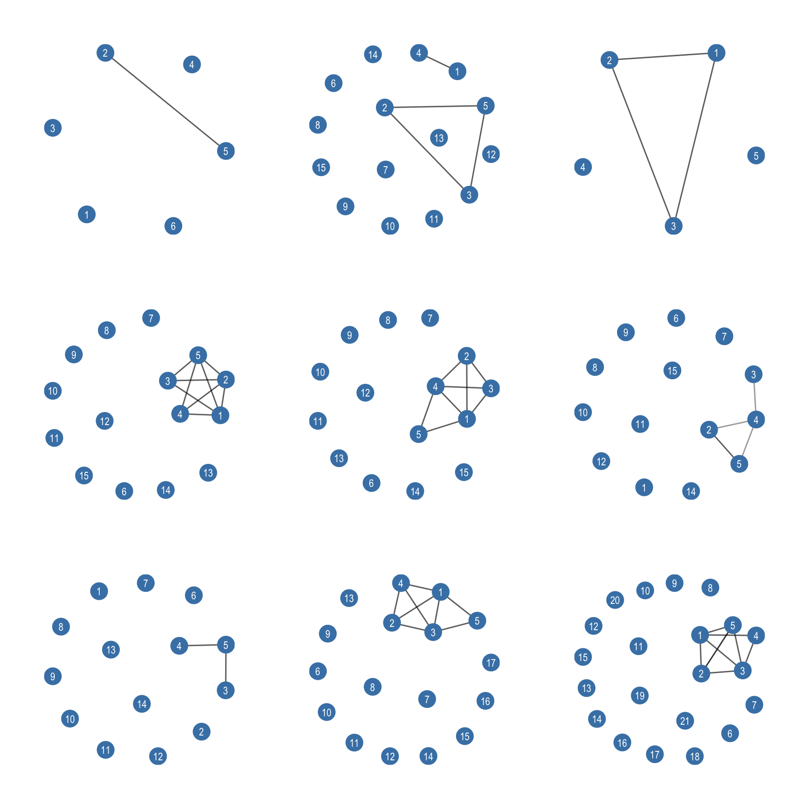

library(igraph)
library(egor)
library(networkdata)
library(ggraph)
library(patchwork)
library(tidyverse)
library(knitr)8 Ego Networks
Ego networks refer to the personal network surrounding a single focal individual, known as the ego. An ego network includes the ego, the people directly connected to them, so called alters, and the relationships among those alters. Rather than examining an entire community or organization, ego network analysis focuses on the immediate social environment of one person, allowing researchers to understand how information, resources, influence, or support flow through that individual’s connections. By analyzing the size of the network, the strength of ties, the diversity of contacts, and the level of interconnectedness among alters, scholars can assess factors such as social capital, access to opportunities, and resilience. Ego networks are especially useful in studying phenomena like job searching, knowledge sharing, health behaviors, and online social interaction, where an individual’s direct relationships play a critical role in shaping outcomes.
In this chapter, we will begin by introducing the fundamentals of ego network data and learning how to use the egor package to manipulate, construct, and visualize ego networks. We will then examine substantive research questions related to homophily; the tendency for similar individuals to associate with one another more frequently than with dissimilar others, across various demographic dimensions. Finally, we will explore an applied example in which properties of ego networks are used to predict important outcomes of interest.
8.1 Packages Needed for this Chapter
NoteNote
The egor package works with ego network data in tidy format, meaning it follows tidy data principles. In tidy data, each row represents one observation and each column represents one variable. Instead of storing everything in a single large matrix, ego network data are separated into three linked tables: one containing information about egos, one containing information about alters, and one containing the ties among alters. These tables are connected through ID variables that indicate which alters belong to which ego and which alters are tied to one another. This structure makes the data easier to understand, manipulate, and analyze using tools from the tidyverse, while still preserving the relational nature of network data.
8.2 Ego Network Data Structure
Ego network data are typically generated through survey-based approaches that capture information about individuals and their immediate social surroundings. In one common design, respondents (egos) are asked to name the people with whom they have specific types of relationships and to describe the connections among those named individuals (alters), thereby providing both node-level and tie-level information from a single informant. A more elaborate strategy uses a two-stage snowball approach: after the initial respondent identifies their contacts, those contacts are subsequently surveyed about their relationships with one another, allowing for more detailed mapping of ties within the ego’s local network. Although data collected in these ways do not reveal how these personal networks are embedded within the broader population structure, they enable researchers to estimate the distribution and characteristics of ego network forms across even very large populations.
An important methodological implication of this design is that survey-based ego network data typically produce independent observations: each ego network is centered on a different respondent and represents a separate local structure. As a result, ego networks can often be treated as independent units of analysis, which allows researchers to apply standard statistical models (such as regression models) to explain variation in network characteristics (e.g., density, composition, or diversity) across egos.
Methodologically, such data consist of multiple distinct networks, each centered on a different ego and typically composed of different actors. This means that each ego network should be stored and analyzed as a separate actor-by-actor matrix rather than combined into a single stacked dataset, since the matrices do not represent multiple relations among the same set of individuals.
A second common source of ego network data involves deriving them from complete network datasets that already contain information about all actors and ties within a bounded population. In this case, researchers can extract the local network surrounding a focal actor directly from the larger structure. Simple extraction procedures allow analysts to isolate an ego and their direct ties, though these methods may omit information about relationships among the alters themselves. More comprehensive approaches rely on identifying a defined neighborhood—such as through a previously constructed attribute or partition that marks members of a particular ego’s local environment—and then generating a subgraph that preserves both ego–alter and alter–alter ties. Unlike survey-generated ego networks, these extracted ego networks remain embedded within a known global structure, enabling comparisons between local and whole-network properties.
8.2.1 Constructing an Ego Network with egor
An egor object stores the multiple data levels required for ego-centered network analysis. These levels include ego-level data (attributes of respondents), alter-level data (attributes of the individuals named by the respondent), and alter–alter ties (relationships among those alters).
In this chapter, we draw on ego network data from the UC Berkeley Social Networks Study (UCNets) , a longitudinal study of personal networks in the San Francisco Bay Area conducted between 2015 and 2018. Specifically, we use data from the first wave and select only a subset of variables relevant for the examples presented here. Several of these variables are also recoded to create analytically useful ego-, alter-, and alter–alter-level measures. The full code used to construct the dataset employed in this chapter is provided in the Appendix. However, because the UCNets data are restricted-access, readers must register and obtain access themselves in order to reproduce the dataset from the original files. Further information about the study is available at the UCNets project website: https://ucnets.berkeley.edu/.
In this chapter, we draw on ego network data from the UC Berkeley Social Networks Study (UCNets) (Fischer 2020), a longitudinal study of personal networks in the San Francisco Bay Area conducted between 2015 and 2018. Specifically, we use data from the first wave and select only a subset of variables relevant for the examples presented here. Several of these variables are also recoded to create analytically useful ego-, alter-, and alter–alter-level measures. The full code used to construct the dataset is provided in the Appendix[INSERT LINK]. This code already processes the raw survey files and combines them into an egor object, the data structure used by the egor package for ego-centered network analysis. An egor object contains three linked levels of data: ego-level attributes (characteristics of the respondents), alter-level attributes (characteristics of the individuals named in each respondent’s personal network), and alter–alter ties (relationships among those alters within each ego network). Because the UCNets data are restricted-access, readers must register and obtain access themselves in order to reproduce the dataset from the original files. Further information about the study is available at the UCNets project website.
We begin by exploring each of the three components of the egor object—ego attributes, alter attributes, and alter–alter ties—in order to understand how the ego network data are structured before proceeding to the analysis.
head(ego_net_w1$ego) # ego level# A tibble: 6 × 19
.egoID gender year_birth age married pets home_owner informal_groups health
<chr> <dbl> <dbl> <dbl> <dbl> <dbl> <dbl> <dbl> <ord>
1 30000… 1 1961 53.8 0 0 0 1 fair
2 30000… 0 1964 51.3 0 0 0 1 good
3 30000… 1 1951 63.7 0 1 0 0 good
4 30000… 1 1959 55.9 1 1 1 1 very_…
5 30000… 1 1952 63.1 1 0 1 0 excel…
6 30000… 1 1949 66.3 0 0 0 0 fair
# ℹ 10 more variables: lose_weight_advice <dbl>, smoker <dbl>,
# drinking_days <dbl>, marijuana_use <dbl>, extraversion <dbl>,
# education <ord>, race <fct>, birth_continent <fct>, religion <fct>,
# income <ord>head(ego_net_w1$alter) # alter level# A tibble: 6 × 6
.altID .egoID gender family same_race same_age
<chr> <chr> <dbl> <dbl> <dbl> <dbl>
1 1 3000000000036 1 1 1 1
2 2 3000000000036 0 0 1 1
3 3 3000000000036 1 0 1 NA
4 4 3000000000036 1 0 1 NA
5 5 3000000000036 0 0 1 1
6 6 3000000000036 1 0 1 NAhead(ego_net_w1$aatie) # alter-alter ties# A tibble: 6 × 4
.egoID .srcID .tgtID weight
<chr> <chr> <chr> <dbl>
1 3000000000036 2 5 1
2 3000000000036 2 5 1
3 3000000000156 2 3 1
4 3000000000156 3 5 1
5 3000000000156 2 3 1
6 3000000000156 2 5 1Each of the three tables is linked through identifier variables that ensure the different levels of information correspond to the correct ego networks. The variable .egoID appears in all three tables and serves as the key that connects respondent-level attributes in the ego table to the individuals they named in their personal networks in the alter table, and to the relationships among those alters recorded in the alter–alter tie table.
In the alter-level table, each network member receives an identifier .altID, which uniquely identifies alters within a given ego network. Additional variables describe characteristics of the alter, including gender, whether the alter is a family member (family), whether the alter shares the same race as the ego (same_race), and whether the alter is approximately the same age as the ego (same_age).
The alter–alter tie table records the relationships among alters within each ego network. These ties are based on survey questions asking respondents how well pairs of alters know each other (e.g., “How well does name 1 know name 2?”), with response options such as very well, know a little, or do not know/something else. For the purposes of constructing the network, responses indicating that alters know each other “very well” or “a little” were coded as a tie. The pairwise variables were reshaped into long format, and the identifiers .srcID and .tgtID indicate which two alters are connected. Because only positive ties were retained, the resulting weight variable is constant and equal to 1 for all alter–alter ties in the final dataset.
Before proceeding with the analysis, we remove respondents for whom the variable numgiven is missing in the ego-level data. This variable records how many alters each respondent named and is required for several of the descriptive measures used later in the chapter. Because numgiven records how many alters a respondent named, a missing value at the ego level implies that no alter information is recorded for that respondent. Consequently, it is sufficient to remove missing values only from the ego table, since the alter and alter–alter tie tables contain entries only for egos who actually reported network members.
Examining the dimensions of the three components after removing missing values (dim(ego_net_w1$ego), dim(ego_net_w1$alter), and dim(ego_net_w1$aatie)) provides a quick overview of the dataset. The ego table now contains 1159 respondents. Across these respondents, a total of 12209 alters were named, each linked to a specific ego via .egoID and uniquely identified within each ego network by .altID. The alter–alter tie table contains 6696 rows, with each row representing a relationship between two alters within the same ego network. These ties are identified by the .egoID of the corresponding ego and the .srcID and .tgtID variables that indicate the two alters involved.
8.3 Plotting Ego Nets
We now plot the networks using igraph. The first step is to convert the egor object into a list of igraph objects using as_igraph() from the egor package. Below, we create the list and inspect the first three ego networks.
# Convert egor object to a list of igraph ego networks
g <- as.igraph(ego_net_w1)
# Inspect the first three ego networks
g[1:6]$`3000000000036`
IGRAPH ae347b3 UNW- 6 2 --
+ attr: .egoID (g/c), name (v/c), gender (v/n), family (v/n), same_race
| (v/n), same_age (v/n), weight (e/n)
+ edges from ae347b3 (vertex names):
[1] 2--5 2--5
$`3000000000156`
IGRAPH 695860f UNW- 15 8 --
+ attr: .egoID (g/c), name (v/c), gender (v/n), family (v/n), same_race
| (v/n), same_age (v/n), weight (e/n)
+ edges from 695860f (vertex names):
[1] 2--3 3--5 2--3 2--5 1--4 2--5 3--5 1--4
$`3000000000271`
IGRAPH f429c77 UNW- 5 6 --
+ attr: .egoID (g/c), name (v/c), gender (v/n), family (v/n), same_race
| (v/n), same_age (v/n), weight (e/n)
+ edges from f429c77 (vertex names):
[1] 1--2 1--3 1--2 2--3 1--3 2--3
$`3000000000317`
IGRAPH 80c67eb UNW- 15 18 --
+ attr: .egoID (g/c), name (v/c), gender (v/n), family (v/n), same_race
| (v/n), same_age (v/n), weight (e/n)
+ edges from 80c67eb (vertex names):
[1] 1--2 2--3 2--4 2--5 1--4 2--4 4--5 1--3 2--3 3--5 1--2 1--3 1--4 1--5 1--5
[16] 2--5 3--5 4--5
$`3000000000346`
IGRAPH 0f5b3b4 UNW- 15 16 --
+ attr: .egoID (g/c), name (v/c), gender (v/n), family (v/n), same_race
| (v/n), same_age (v/n), weight (e/n)
+ edges from 0f5b3b4 (vertex names):
[1] 1--3 2--3 3--4 1--2 2--3 2--4 1--2 1--3 1--4 1--5 1--5 4--5 1--4 2--4 3--4
[16] 4--5
$`3000000000349`
IGRAPH 3063d2b UNW- 14 5 --
+ attr: .egoID (g/c), name (v/c), gender (v/n), family (v/n), same_race
| (v/n), same_age (v/n), weight (e/n)
+ edges from 3063d2b (vertex names):
[1] 3--4 2--4 2--5 2--5 4--5
Note
If we instead wanted to work within the statnet framework, we could use as_network() to convert the data into objects of class network.
After running as_igraph(), we obtain a list of ego networks in igraph format, where each element of the list corresponds to one ego’s personal network. The attributes stored at the alter level are automatically transferred as vertex attributes, and the alter–alter tie information (including edge weights) is preserved as edge attributes. By default, the ego node itself is not included in these igraph representations. This is common practice because ego is, by definition, connected to all alters, and therefore contributes little additional structural variation in many visualizations or structural measures. In later sections, we will examine statistics that explicitly incorporate both ego and alter information.
We now visualize a subset of the data by plotting the first 9 ego networks in the list using ggraph. This is shown in Figure 8.1.
plots <- lapply(g[1:9], function(g) {
# rebuild a clean graph using only structure + names
el <- as_edgelist(g, names = TRUE)
vn <- V(g)$name
if (length(el) == 0 || nrow(el) == 0) {
g_clean <- make_empty_graph(n = length(vn), directed = FALSE)
V(g_clean)$name <- vn
} else {
g_clean <- graph_from_edgelist(el, directed = FALSE)
# add back isolated vertices, if any
missing_v <- setdiff(vn, V(g_clean)$name)
if (length(missing_v) > 0) {
g_clean <- add_vertices(g_clean, nv = length(missing_v), name = missing_v)
}
}
ggraph(g_clean, layout = "circle") +
geom_edge_link(alpha = 0.4) +
geom_node_point(size = 6, color = "steelblue") +
geom_node_text(aes(label = name), size = 3, color = "white") +
theme_graph()
})
wrap_plots(plots, ncol = 3)
8.4 Descriptive Statistics for Ego Networks
One of the most commonly used structural measures in ego network analysis is density. Density captures the proportion of all possible alter–alter ties that are actually present in an ego network. In other words, it tells us how interconnected an ego’s alters are with one another. For example, if an ego has 5 alters, there are \[ \frac{5 \times (5 - 1)}{2} = 10 \] possible undirected ties among those alters. If all 10 ties are present, density equals 1 (a fully connected clique). If only 8 of the 10 possible ties are present, density equals 0.8.
Density is often of substantive interest because it reflects the level of cohesion within a personal network. Highly dense ego networks (values close to 1) indicate tightly knit groups in which most alters are connected to one another. Such cohesive structures can facilitate trust, norm enforcement, and social support, as information circulates quickly and reputational mechanisms are strong. However, according to structural hole theory (Burt 1992), dense networks tend to generate redundant information because alters are connected to many of the same people and share overlapping perspectives. The key advantages of social capital derive not primarily from the attributes of one’s alters, but from the structure of the ego network itself. Individuals benefit when they bridge gaps, so-called structural holes, between otherwise disconnected groups. In low-density networks, ego may occupy a brokerage position linking clusters that are not directly connected to each other, thereby gaining access to diverse, non-redundant information and potential strategic advantages (such as faster promotion within organizations). Density therefore captures an important theoretical trade-off between cohesion and brokerage in ego network structure.
We can calculate density for each ego network using the ego_density() function applied to our egor object. Note that ego networks with 0 or 1 alters will have density equal to NaN, because density is undefined when no alter–alter ties are possible. There are 10 such values and they are removed from the plot below.
dens <- ego_density(ego_net_w1)
head(dens)# A tibble: 6 × 2
.egoID density
<chr> <dbl>
1 3000000000036 0.133
2 3000000000156 0.0762
3 3000000000271 0.6
4 3000000000317 0.171
5 3000000000346 0.152
6 3000000000349 0.0549sum(is.nan(dens$density)) # number of NaN's[1] 10ggplot(dens, aes(x = density)) +
geom_histogram(binwidth = 0.05, fill = "steelblue", color = "white") +
labs(
x = "Ego network density",
y = "Number of ego networks",
title = "Distribution of ego network densities"
) +
theme_minimal()Warning: Removed 10 rows containing non-finite outside the scale range
(`stat_bin()`).
8.5 Network Composition Based on Alter Attributes
A useful way to describe ego networks is to examine the composition of alters within each network. Rather than focusing on the structure of ties among alters, compositional measures summarize who is present in the ego’s personal network. These measures are obtained by aggregating alter attributes within each ego network.
The comp_ply() function from the egor package provides a convenient way to compute such summaries. It applies a function to an alter attribute within each ego network and returns one value per ego. In our dataset, the alter-level data include several characteristics, such as gender, whether the alter is a family member, and whether the alter shares the same race as the ego (same_race). Using these variables, we can construct several interpretable measures of network composition.
Proportion of Family Members
A simple but informative compositional measure is the proportion of family members within an ego network. This captures the extent to which a respondent’s personal network is centered around kin relationships rather than non-kin ties such as friends, coworkers, or acquaintances. Networks with a high proportion of family members may indicate stronger reliance on kin-based support systems, whereas networks with fewer family members may reflect more diverse social connections outside the household or extended family.
In our alter-level data, the variable family indicates whether an alter is a relative (including spouse/partner, parent, child, sibling, or another relative). Using comp_ply(), we can compute the proportion of alters who are family members for each ego network.
prop_family <- comp_ply(ego_net_w1, "family", mean)
head(prop_family)# A tibble: 6 × 2
.egoID result
<chr> <dbl>
1 3000000000036 0.167
2 3000000000156 0.0667
3 3000000000271 0
4 3000000000317 0.467
5 3000000000346 0.533
6 3000000000349 0.714 Gender Composition of the Network
Another compositional measure describes the gender composition of ego networks. This measure captures the share of alters who are female within each respondent’s personal network. Examining gender composition can reveal patterns of gender-based social organization and potential gender homophily, where individuals tend to form ties with others of the same gender.
In our alter-level data, gender is coded as 0 = male and 1 = female. By taking the mean of this binary variable across alters within each ego network, we obtain the proportion of female alters in each network. Values close to 0 indicate networks composed mostly of men, values close to 1 indicate networks composed mostly of women, and values around 0.5 suggest a more gender-balanced network.
prop_female <- comp_ply(ego_net_w1, "gender", mean)
head(prop_female)# A tibble: 6 × 2
.egoID result
<chr> <dbl>
1 3000000000036 0.667
2 3000000000156 0.2
3 3000000000271 1
4 3000000000317 0.6
5 3000000000346 0.467
6 3000000000349 0.5 Racial Homophily
A third compositional measure captures racial homophily within ego networks. Homophily refers to the tendency for individuals to form social ties with others who share similar characteristics. Here we examine whether alters share the same race as the ego.
The alter-level variable same_race indicates whether the respondent reported that the alter is of the same race as themselves (1 = same race, 0 = different race). By averaging this binary variable across alters within each ego network, we obtain the proportion of alters who share the ego’s race. Higher values indicate more racially homogeneous networks, while lower values suggest greater racial diversity.
prop_same_race <- comp_ply(ego_net_w1, "same_race", mean)
head(prop_same_race)# A tibble: 6 × 2
.egoID result
<chr> <dbl>
1 3000000000036 1
2 3000000000156 0.133
3 3000000000271 NA
4 3000000000317 1
5 3000000000346 1
6 3000000000349 NA To obtain a compact overview of these compositional measures, we combine them into a single summary table.
prop_family <- comp_ply(ego_net_w1, "family", mean)
prop_female <- comp_ply(ego_net_w1, "gender", mean)
prop_same_race <- comp_ply(ego_net_w1, "same_race", mean)
comp_summary <- data.frame(
egoID = prop_family$.egoID,
prop_family = prop_family$result,
prop_female = prop_female$result,
prop_same_race = prop_same_race$result
)
row.names(comp_summary) <- NULL
kable(
head(comp_summary, 10),
digits = 2,
caption = "Summary of compositional measures for ego networks."
)| egoID | prop_family | prop_female | prop_same_race |
|---|---|---|---|
| 3000000000036 | 0.17 | 0.67 | 1.00 |
| 3000000000156 | 0.07 | 0.20 | 0.13 |
| 3000000000271 | 0.00 | 1.00 | NA |
| 3000000000317 | 0.47 | 0.60 | 1.00 |
| 3000000000346 | 0.53 | 0.47 | 1.00 |
| 3000000000349 | 0.71 | 0.50 | NA |
| 3000000000490 | 0.29 | NA | NA |
| 3000000000552 | 0.18 | 0.59 | NA |
| 3000000000560 | 0.14 | 0.57 | NA |
| 3000000000601 | 0.43 | 0.71 | NA |
Several entries may appear as NA. These occur when the compositional measure cannot be computed because the relevant alter attribute is missing or undefined for all alters in that ego network, or when a network contains too few alters to compute a meaningful proportion.
8.6 Diversity of Alters Within Ego Networks
While the previous measures summarize the presence of specific alter characteristics, another perspective focuses on the overall diversity of alters within an ego network. Instead of examining whether alters resemble the ego, diversity measures capture how heterogeneous the set of alters is with respect to a given attribute.
One commonly used diversity measure is Shannon entropy, defined as
\[ H = - \sum_i p_i \log(p_i) \]
where (\(p_i\)) represents the proportion of alters belonging to category (\(i\)). Entropy increases when alters are more evenly distributed across categories and decreases when most alters belong to the same category. Networks with entropy close to zero therefore contain alters who are largely similar to one another, while higher values indicate more heterogeneous networks.
In the egor package, entropy-based diversity measures can be computed directly using the function alts_diversity_entropy().
gender_entropy <- alts_diversity_entropy(
ego_net_w1,
alt.attr = "gender",
base = exp(1)
)
head(gender_entropy)# A tibble: 6 × 2
.egoID entropy
<chr> <dbl>
1 3000000000036 0.637
2 3000000000156 0.500
3 3000000000271 0
4 3000000000317 0.673
5 3000000000346 0.691
6 3000000000349 0.693This measure captures the gender diversity of each ego network. Networks in which alters are evenly split between men and women have higher entropy values, whereas networks composed mostly of alters of the same gender have lower values.
We can combine the diversity measure with the compositional measures above and visualize their distributions to better understand how ego networks vary across respondents.
# add entropy to summary table
comp_summary$gender_entropy <- gender_entropy$entropy
# reshape for plotting
comp_long <- comp_summary |>
pivot_longer(
cols = -egoID,
names_to = "measure",
values_to = "value"
)
# plot
ggplot(comp_long, aes(x = value)) +
geom_histogram(bins = 20, fill = "steelblue", color = "white") +
facet_wrap(~ measure, ncol = 2, scales = "free") +
labs(
x = "Value",
y = "Frequency"
) +
theme_minimal()
The distributions reveal several interesting patterns in the composition of ego networks. The proportion of family members varies widely across respondents, indicating substantial heterogeneity in the extent to which personal networks are centered around kin. The gender composition measure is broadly distributed around intermediate values, suggesting that many respondents’ networks contain a mixture of male and female alters rather than being strongly gender-segregated. The gender diversity measure is concentrated toward higher values, indicating that many ego networks contain a relatively balanced mix of male and female alters. Finally, the distribution of racial homophily is highly skewed toward 1, suggesting that most respondents name alters who share their racial background.
These patterns are consistent with well-known findings on homophily in social networks, that is, the tendency for individuals to form ties with others who are similar to themselves (McPherson, Smith-Lovin, and Cook 2001). In particular, the concentration of prop_same_race near one indicates strong racial homophily in personal networks. At the same time, the distributions of prop_female and gender_entropy suggest that many networks remain gender-mixed rather than fully gender-segregated. Together, these measures show that ego networks are shaped by both similarity and diversity in the social contexts from which alters are drawn.